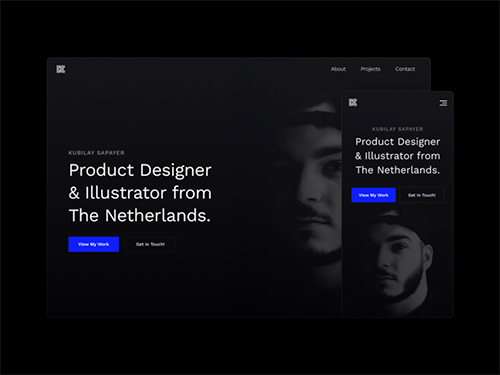
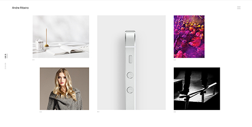

...continued
You are the most important consideration when it comes to designing a portfolio, and it is important to make sure to highlight how you think, what you do, why you do it; your primary purpose. This is a first impression, and it is often a few seconds that a determination is made; either on to the next, or, "oh, this is interesting". So how do we seperate ourselves? Be yourself! The picture below is the portfolio of Kubilay Sapayer, a designer from the Netherlands. What is so great about this design is it is very soft. The text doesnt scream, the opacity of the picture, the dark background. He has a very simple nav bar, with a click to scroll section. His portfolio pieces are layed out in grid format that is very modern and sleek.
One very important quality is Simplicity. The design here is extremely simple. I remeber at one point in my career, someone told me, "keep it simple, the less clicks the better. " -JF His design here features exactly what you need. It is extremely simple. He doesn't crowd the page, in fact, the openess and negative space is so inviting, that the simplicity of the text, the choice of color directs you to exactly what you want to know. Along with this, the animations are extremely simple, there's not a lot of crazy stuff going on, it's straight to the point, while also having this edge to the design that is very refreshing and has an elegance to it.
Andre Ribeiro, the designer whose work you see displayed above, is another example of minimal, contemorary, clean, crisp, modern design. This portfolio showcases crisp lines and sharp edges. One feature I really enjoy about this portfolio is the hamburger menu icon at the upper right hand corner of the page. It is very sleek and crisp and the menu scrolls down and takes up the whole page. I really like the typeface, the color scheme, the overall design of the mega_menu. It has this mega or jumbo menu feel, with minimal options. It's very unique.
When in doubt, keep it simple.
- Cory Risch-Smith